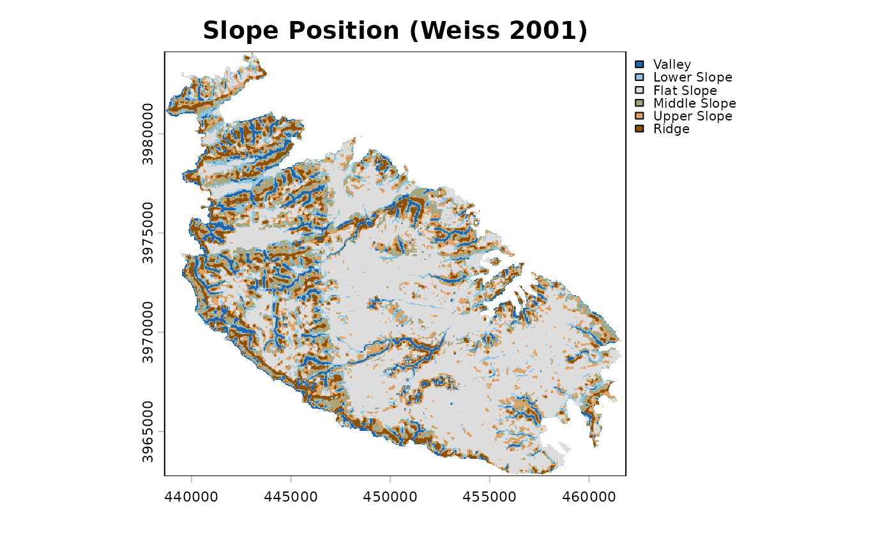
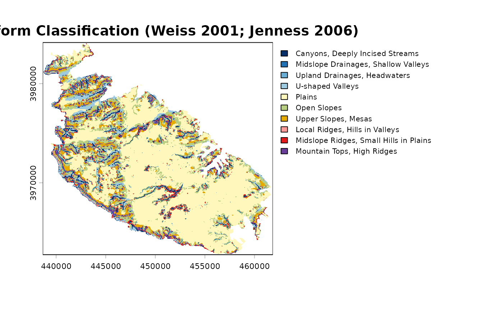
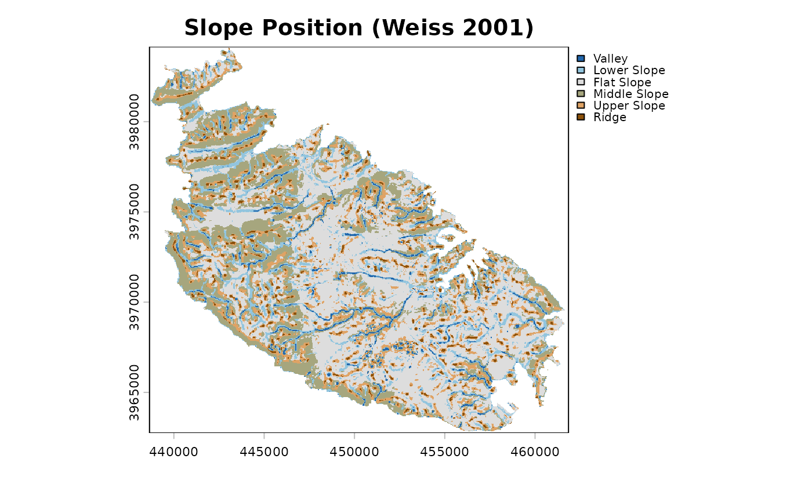
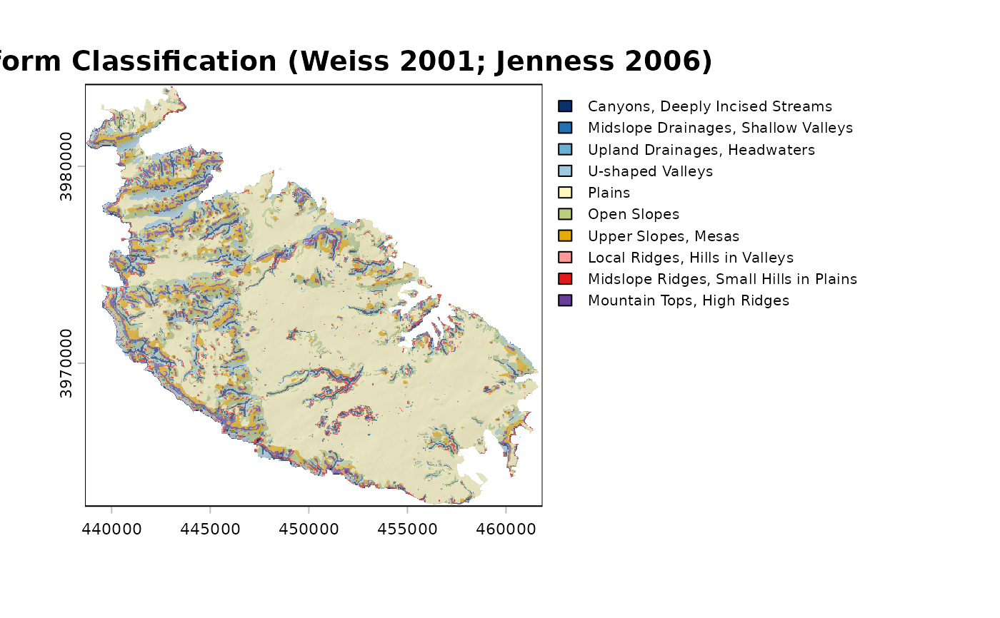
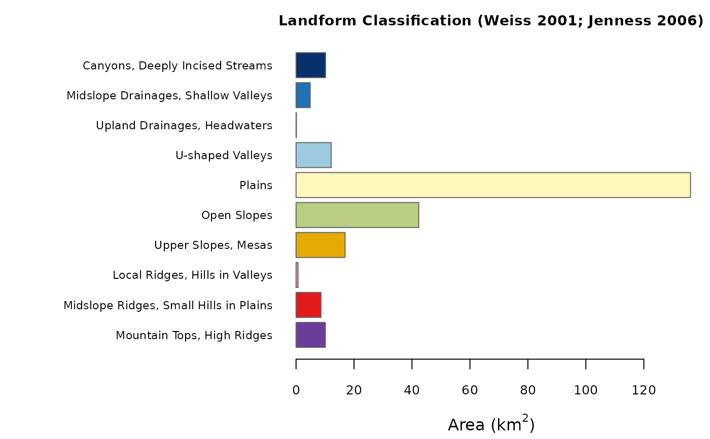

Landform Classification
landform.RdClassifies a landscape into slope-position or landform classes on the basis
of the Topographic Position Index (TPI; see tpi) and slope,
following Weiss (2001) and Jenness (2006). Two classifications are
available: the six-class Slope Position Classification, based on one TPI
scale, and the ten-class Landform Classification, based on a small and a
large TPI scale.
Usage
landform(
x,
scale = 3,
sn = 3,
ln = 7,
class.type = c("slope.position", "landform.classification"),
descriptive = FALSE,
leg.pos = NULL,
leg.cex = 0.8,
units = c("cells", "map"),
shape = c("square", "circle", "annulus"),
inner = NULL,
centre = FALSE,
std = c("global", "local"),
tpi.thr = c(0.5, 1),
lf.thr = 1,
slope.thr = 5,
plot = TRUE,
hillshade = FALSE,
col = NULL
)Arguments
- x
A single-layer
SpatRaster(or aRasterLayer, which is converted internally) representing elevation. A projected coordinate system with the same horizontal and vertical units (e.g. metres) is recommended, since slope (and hence the slope threshold) depends on it.- scale
Neighbourhood size for the Slope Position Classification. With
units = "cells"(default), the width of the moving window in cells (odd integer >= 3); withunits = "map", the radius (half-width for square windows) in map units (metres for longitude/latitude rasters). Default3.- sn, ln
Small and large neighbourhood sizes for the Landform Classification, in the same units as
scale. Defaults3and7;lnmust be larger thansn.- class.type
Either
"slope.position"(default) or"landform.classification".- descriptive
Logical. If
TRUE, a bar plot of the area of each class is drawn in addition to the map (defaultFALSE). The descriptive statistics are always computed and stored in the returned object (see Value).- leg.pos
Position of the legend of the map, as a keyword accepted by
legend(e.g."topright"). The default,NULL, places the legend outside the map, to its right, so that no data are hidden.- leg.cex
Magnification of the legend text. Default
0.8.- units
Either
"cells"(default) or"map"; seescale.- shape
Neighbourhood shape:
"square"(default),"circle", or"annulus". Seetpi.- inner
Inner radius (or radii) of the annulus, in the same units as
scale: one value for the Slope Position Classification, two values (forsnandln) for the Landform Classification. Ignored unlessshape = "annulus".- centre
Logical. Include the focal cell in the neighbourhood mean? Default
FALSE. Seetpi.- std
TPI standardisation:
"global"(default; Weiss 2001, Jenness 2006) or"local"(as in landform <= 0.2). Seetpifor the difference, which can be substantial.- tpi.thr
Two increasing positive thresholds (in standard deviation units) used by the Slope Position Classification. Default
c(0.5, 1)(Weiss 2001).- lf.thr
Threshold (in standard deviation units) separating low, mid and high TPI in the Landform Classification. Default
1(Weiss 2001).- slope.thr
Slope threshold, in degrees, separating flat from sloping terrain. Default
5(Weiss 2001).- plot
Logical. Draw the map of the classes? Default
TRUE.- hillshade
Logical. Draw the classes semi-transparently over a hillshade? Default
FALSE.- col
Optional vector of colours, one per class. By default the Slope Position Classification uses an ordinal blue-to-brown palette (valley to ridge) that remains readable with the common forms of colour blindness; the Landform Classification groups hues by landform family (drainages and valleys in blues, plains and slopes in yellows and greens, ridges and tops in oranges, reds and purple). With ten classes no palette is fully colour-blind safe; supply your own if needed.
Value
An object of class "landform": a list with elements
classesa categorical
SpatRasterof the classes (integer codes with class names as levels and a colour table); per-class layers can be obtained withclass_layers;tpia
SpatRasterwith the raw (elevation units) and standardised TPI layers used in the classification;slopea
SpatRasterof slope (degrees);statsa data frame with, for every class, the number of cells, the area (km\(^2\)), the percentage of the classified area, and the mean elevation and slope;
demthe input elevation raster;
paramsa list of the settings used.
The object has print, summary and plot methods (see
plot.landform). The map (and, with descriptive = TRUE,
the bar plot of class areas) is drawn as a side effect when
plot = TRUE; the object is returned invisibly in that case.
Details
Slope Position Classification (Weiss 2001). With \(z\) the
standardised TPI, \(t_1 < t_2\) the values of tpi.thr, and
\(s\) the slope in degrees:
| 1 Valley | \(z \le -t_2\) |
| 2 Lower Slope | \(-t_2 < z \le -t_1\) |
| 3 Flat Slope | \(-t_1 < z < t_1\) and \(s \le\) slope.thr |
| 4 Middle Slope | \(-t_1 < z < t_1\) and \(s >\) slope.thr |
| 5 Upper Slope | \(t_1 \le z \le t_2\) |
| 6 Ridge | \(z > t_2\) |
Landform Classification (Weiss 2001; Jenness 2006). With
\(SN\) and \(LN\) the standardised TPI at the small and large scales,
and \(t\) the value of lf.thr:
| 1 Canyons, Deeply Incised Streams | \(SN \le -t\), \(LN \le -t\) |
| 2 Midslope Drainages, Shallow Valleys | \(SN \le -t\), \(-t < LN < t\) |
| 3 Upland Drainages, Headwaters | \(SN \le -t\), \(LN \ge t\) |
| 4 U-shaped Valleys | \(-t < SN < t\), \(LN \le -t\) |
| 5 Plains | \(-t < SN < t\), \(-t < LN < t\), \(s \le\) slope.thr |
| 6 Open Slopes | \(-t < SN < t\), \(-t < LN < t\), \(s >\) slope.thr |
| 7 Upper Slopes, Mesas | \(-t < SN < t\), \(LN \ge t\) |
| 8 Local Ridges, Hills in Valleys | \(SN \ge t\), \(LN \le -t\) |
| 9 Midslope Ridges, Small Hills in Plains | \(SN \ge t\), \(-t < LN < t\) |
| 10 Mountain Tops, High Ridges | \(SN \ge t\), \(LN \ge t\) |
Both sets of rules assign every cell to exactly one class.
Edges and NA cells. Slope cannot be computed for the outermost
cells of the raster and for cells adjacent to NA cells; these cells
are left unclassified (NA) for every class, so that the class
frequencies are not biased by edge effects.
Area. Class areas are computed with cellSize,
and are therefore correct also for longitude/latitude rasters; for
projected rasters they are ground areas, which may differ slightly from
the nominal cell area (resolution squared) because of the scale distortion
of the projection. If the
raster has no coordinate reference system, map units are assumed to be
metres.
Reproducing results of landform <= 0.2. Use
std = "local", centre = TRUE (with the default square window in
cells). Cells whose standardised TPI equalled exactly \(t_1\) were left
unclassified by earlier versions and are now classified as Upper Slope; edge
cells are now consistently NA.
References
Jenness, J. (2006). Topographic Position Index (tpi_jen.avx) extension for ArcView 3.x, v. 1.2. Jenness Enterprises.
Weiss, A. (2001). Topographic Position and Landforms Analysis. Poster presentation, ESRI User Conference, San Diego, CA.
See tpi for references on the TPI and its standardisation.
Examples
dem <- malta_dtm()
# Slope Position Classification, 9 x 9 cell window
sp <- landform(dem, scale = 9)

sp
#> <landform> Slope Position Classification (Weiss 2001)
#> neighbourhood : scale = 9 in cells (window width) - square (focal cell excluded)
#> TPI standard. : global
#> classified : 151209 cells, 242.108 km2
#>
#> code class area_km2 percent
#> 1 Valley 18.525 7.7
#> 2 Lower Slope 20.158 8.3
#> 3 Flat Slope 117.906 48.7
#> 4 Middle Slope 32.303 13.3
#> 5 Upper Slope 29.647 12.2
#> 6 Ridge 23.569 9.7
summary(sp)
#> code class cells area_km2 percent mean_elev mean_slope
#> 1 1 Valley 11570 18.52517 7.651614 69.89451 9.338478
#> 2 2 Lower Slope 12590 20.15838 8.326192 71.80379 6.280658
#> 3 3 Flat Slope 73638 117.90586 48.699686 74.13968 2.352399
#> 4 4 Middle Slope 20175 32.30305 13.342410 86.22553 8.891103
#> 5 5 Upper Slope 18516 29.64684 12.245291 94.85939 5.342676
#> 6 6 Ridge 14720 23.56875 9.734807 110.86959 7.932017
# Landform Classification, circular neighbourhoods of 120 m and 480 m
lf <- landform(dem, class.type = "landform.classification",
sn = 120, ln = 480, units = "map", shape = "circle")

# \donttest{
# the standardisation used by landform <= 0.2, for comparison
sp_local <- landform(dem, scale = 9, std = "local", centre = TRUE)

# }
# the same, over a hillshade, with the bar plot of class areas
plot(lf, hillshade = TRUE)

plot(lf, what = "area")

# one layer per class
layers <- class_layers(lf)